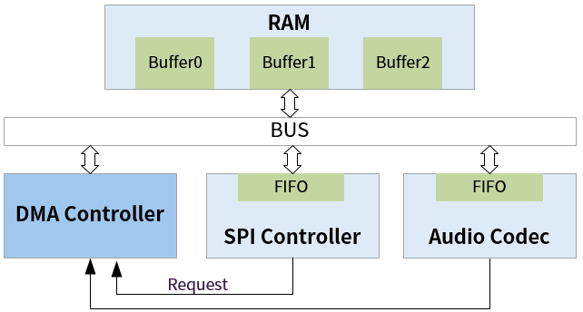

DMA 使用指南
9 Apr 2025
Read time: 1 minute(s)
Direction memory access (DMA) 模块提供一种高效的数据传输技术，能够在不受 CPU 干预的情况下进行设备间的数据传输，从而减少 CPU 负荷。CPU
使能 DMA 之后，就退出操作，由 DMA 独立自主控制数据传输。此外，DMA 提供的数据交换具有高带宽和低延迟的优点。
注： 关于 DMA 可以连接的设备列表，可查看具体产品型号对应的数据手册。关于 DMA 存储单元的详细说明，可查看具体产品型号用户手册的功能框图。
注： USB、GMAC、eMMC 等模块具有内置的 DMA。为了方便区分，本模块可视作通用 DMA 模块，不适用于具有内置 DMA
的硬件模块。
术语 |
定义 |
注释说明 |
|---|---|---|
DMA |
Direct Memory Access |
直接存储器访问 |
DRQ |
DMA Request |
指 DMA 请求的端口号 |
DMA 模块特性：
-
支持八个 DMA 通道，每通道有 32 个源端和 32 个终端可选
-
采用链表配置方式，寄存器描述通道状态
-
设备位宽支持 8/ 16/ 32/ 64 位，Burst 长度支持 1/ 4/ 8/ 16 个
-
DMA 源端、终端地址 8Byte 对齐

根据数据的源和目的，DMA 操作分为以下几种情况：
- |
内核中类型定义 |
含义 |
特点 |
|---|---|---|---|
1 |
DMA_MEM_TO_MEM |
从内存到内存 将数据从一个内存区域复制到另一个内存区域（包括 DRAM、SRAM），可以看作是 memcpy() 的硬件加速版本，用于高效地在内存中移动大量数据。 |
由于只涉及内存操作，不涉及设备，因此操作相对简单，不需要握手信号或 FIFO。 |
2 |
DMA_MEM_TO_DEV |
从内存到设备 将数据从内存传输到设备，数据源是内存，而数据目的地是设备。这要求设备能够接收来自内存的数据，并可能需要一些控制逻辑来处理数据传输过程。 |
支持 DMA 操作的设备一般需要提供握手信号或 FIFO 来确保数据传输的正确性和同步性。 |
3 |
DMA_DEV_TO_MEM |
从设备到内存 数据从设备传输到内存，是 DMA_MEM_TO_DEV 的逆操作，允许设备将其数据处理结果或其它信息直接写入内存。 |
需要设备提供相应的握手信号或 FIFO 以确保数据传输的稳定性和正确性。 |
4 |
DMA_DEV_TO_DEV |
从设备到设备 将数据直接从一个设备传输到另一个设备，而不经过 CPU 或内存。 |
要求两个设备之间有直接的数据通路，使用场景较少。 |